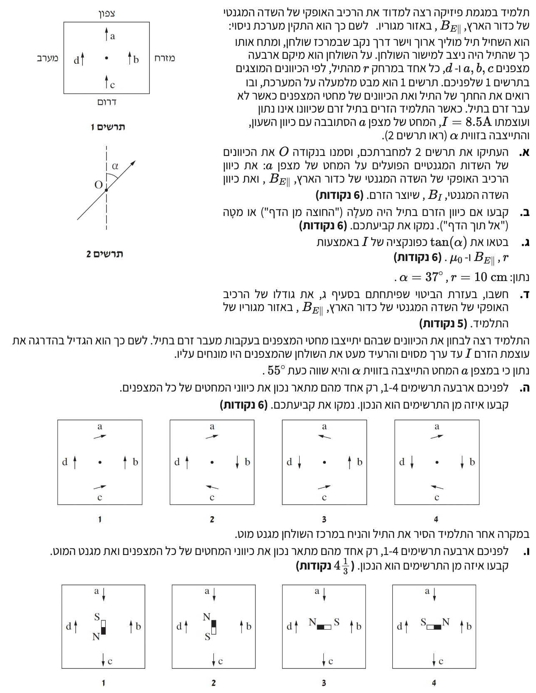

שלום תלמידים יקרים! בשאלה זו נחקור את השדה המגנטי. נשלב יחד את השדה המגנטי של כדור הארץ (שהוא שדה אחיד באזור הניסוי) עם השדה המגנטי שנוצר על ידי תיל ישר וארוך נושא זרם.
נשתמש בעקרון הסופרפוזיציה של שדות מגנטיים כדי להבין את הכיוון אליו יצביעו המצפנים.

[תמונת השאלה המקורית]לא נמצאה תמונה בשם question-image.png באותה תיקייה.
סעיף א'
מה נתון:
מבט על של שולחן, "צפון" מוגדר כלפי מעלה.
הרכיב האופקי של שדה כדור הארץ הוא \( B_{E||} \). מחטים ללא זרם מצביעות צפונה.
זורם זרם \( I = 8.5 \text{ A} \). מחט מצפן \( a \) מסתובבת בכיוון השעון לזווית \( \alpha \).
מה מחפשים:
להעתיק את תרשים 2 ולהוסיף בנקודה O את וקטורי השדות המגנטיים הפועלים על המחט: \( B_{E||} \) ו- \( B_I \).
נוסחאות ועקרונות: עקרון הסופרפוזיציהכיוון שדה מגנטי של תיל ישר
הסבר ושרטוט:
לפני הדלקת הזרם, המחט הצביעה צפונה, לכן שדה כדור הארץ \( B_{E||} \) מכוון צפונה (למעלה בתרשים).
כאשר זורם זרם בתיל ישר, הוא יוצר סביבו קווי שדה מגנטי בצורת מעגלים קונצנטריים סביב התיל. כיוון שנקודה \( a \) נמצאת בדיוק "מעל" התיל (על ציר צפון-דרום ביחס אליו), השדה המגנטי \( B_I \) בנקודה זו חייב להיות משיק למעגל – כלומר בדיוק על ציר מזרח-מערב (אין לו רכיב בציר צפון-דרום).
מכיוון שהמחט סטתה מזרחה (ימינה) עם הדלקת הזרם, השדה השקול קיבל רכיב מזרחי. אנו מסיקים שהשדה של התיל, \( B_I \), חייב להיות מכוון בדיוק מזרחה.
התרשים מציג: וקטור \( B_{E||} \) פונה צפונה (למעלה), ווקטור \( B_I \) פונה מזרחה (ימינה).
טיפ מורה: תמיד כדאי לצייר את השדות המרכיבים (כדור הארץ והתיל) כבסיס שעליו נבנה המקבילית ליצירת השדה השקול. הזווית הנתונה מלמדת אותנו בדיוק לאן פונה שדה התיל.
סעיף ב'
מה נתון:
בנקודה \( a \) (הצפונית לתיל), השדה של התיל \( B_I \) הוא מזרחה.
מה מחפשים:
לקבוע ולנמק האם הזרם הוא "החוצה מן הדף" או "אל תוך הדף".
נוסחאות ועקרונות: כלל יד ימין (כלל הבורג) לזרם ישר
מהו כלל יד ימין (כלל הבורג)?
כלל זה עוזר לנו לקשר בין כיוון הזרם בתיל ישר לבין כיוון השדה המגנטי שהוא יוצר סביבו. איך זה עובד? דמיינו שאתם תופסים ועוטפים את התיל בכף יד ימין. אם תזקפו את האגודל כך שיצביע לכיוון הזרם החשמלי בתיל ($I$), שאר האצבעות המכופפות יצביעו בדיוק בכיוון המעגלי שבו מסתובבים קווי השדה המגנטי ($B$) סביב התיל.
ניתוח כיוון הזרם בשאלה:
כפי שגילינו בסעיף א', בנקודה \( a \) (שנמצאת צפונית לתיל, כלומר "למעלה" בתרשים), השדה המגנטי של התיל מכוון מזרחה ("ימינה").
כעת נבדוק את האפשרויות בעזרת כלל יד ימין: נכוון את האגודל של יד ימין אל תוך הדף. במצב זה, נראה ששאר האצבעות מתכופפות עם כיוון השעון. המשמעות היא שבחלק העליון של המעגל (הצד הצפוני לתיל), כיוון המשיק - שהוא למעשה כיוון השדה המגנטי - יפנה ימינה (מזרחה). זה מתאים בדיוק למה שמצאנו!
מסקנה: כיוון הזרם בתיל הוא אל תוך הדף.
טיפ מורה: כשהזרם זורם לתוך הדף, קווי השדה המגנטי מקיפים אותו עם כיוון השעון. כדאי תמיד לבדוק את עצמכם על ידי סימון של מעגל דמיוני סביב התיל וציור חיצים משיקים בכל אחת מרוחות השמיים (צפון = מזרחה, מזרח = דרומה, דרום = מערבה, מערב = צפונה).
סעיף ג'
מה נתון:
זווית הסטייה היא \( \alpha \). המצפן במרחק \( r \) מתיל עם זרם \( I \).
\[ \tan(\alpha) = \frac{\mu_0 I}{2\pi r B_{E||}} \]
הביטוי הוא: \( \tan(\alpha) = \frac{\mu_0 I}{2\pi r B_{E||}} \)
טיפ מורה: זהו ביטוי קלאסי בניסוי מדידת השדה של כדור הארץ. אם נשנה את הזרם ונמדוד את הזווית, השיפוע של גרף \( \tan(\alpha) \) כתלות ב- \( I \) יאפשר לחשב את \( B_{E||} \).
סעיף ד'
מה נתון:
\( r = 10 \text{ cm} \rightarrow r = 0.1 \text{ m} \)
טיפ מורה: בדיקת סבירות - השדה המגנטי של כדור הארץ על פני הקרקע הוא בסדר גודל של \( 10^{-5} \text{ T} \). התוצאה הגיונית!
סעיף ה'
מה נתון:
הזרם הוגדל, זווית הסטייה כעת היא \( \alpha = 55^\circ \).
מה מחפשים:
לקבוע איזה תרשים (1-4 בשורה הראשונה) מתאר נכון את כל המצפנים.
ניתוח וקטורי של השדות:
תחילה נבין מה אמור להיות כיוון השדה השקול בכל נקודה. מכיוון ש- \( \alpha = 55^\circ > 45^\circ \), מתקיים \( \tan(55^\circ) > 1 \). מכאן מסיקים ששדה התיל גדול משדה כדור הארץ (\( B_I > B_{E||} \)).
נקודה a (צפון): שדה הארץ צפונה, שדה התיל מזרחה. שקול: צפון-מזרח.
נקודה b (מזרח): שדה הארץ צפונה, שדה התיל דרומה. כיוון ש- \( B_I > B_{E||} \), הרכיב הדרומי מנצח! שקול: דרומה.
נקודה c (דרום): שדה הארץ צפונה, שדה התיל מערבה. שקול: צפון-מערב.
נקודה d (מערב): שדה הארץ צפונה, שדה התיל צפונה. שקול: צפונה.
בדיקת התרשימים ופסילתם:
כעת נעבור תרשים-תרשים (מתוך תרשימים 1-4 בשאלה המקורית), נבדוק היכן הוא סותר את המסקנות שלנו, נפסול אותו ונישאר עם התרשים היחיד שאינו נפסל:
תרשים 1: נתבונן במצפן c. לפי הניתוח שלנו הוא אמור לפנות צפונה-מערבה, אך בתרשים 1 הוא פונה מזרחה. לכן תרשים 1 נפסל.
תרשימים 3 ו-4: נתבונן במצפן d. לפי הניתוח שלנו הוא חייב לפנות בדיוק צפונה (משום שגם שדה הארץ וגם שדה התיל פועלים צפונה). בתרשימים 3 ו-4 הוא פונה דרומה. לכן תרשימים אלו נפסלים.
תרשים 2: כל המצפנים בתרשים זה מתאימים במדויק למסקנות שגיבשנו. זהו התרשים היחיד שלא נפסל.
התרשים התואם למסקנות הוא תרשים מספר 2.
טיפ מורה: הזוית הגדולה מ-45 מעלות היא הרמז שנועד להכריע את הכיוון של מחט b. בלעדיו לא היינו יודעים מי מהשדות חזק יותר בציר הצפון-דרום בנקודה זו!
סעיף ו'
מה נתון:
התיל הוחלף במגנט מוט במרכז (שורת תרשימים שנייה).
מה מחפשים:
איזה תרשים (1-4 בשורה השנייה) מתאר נכון את השדות.
עקרונות: שדה של מגנט: יוצא מ-N ונכנס ל-S
תרשים שדה של מגנט:
איור המחשה לקווי השדה בתרשים הנכון (תרשים 1), בו הקוטב הדרומי (S) פונה צפונה.
עקרון הפסילה כשהמגנט משנה כיוון:
הערה חשובה לגבי אסטרטגיית הפתרון: מכיוון שבכל אחד מארבעת התרשימים בשאלה המגנט עצמו מונח בכיוון שונה, עלינו לבחון כל תרשים לגופו מול המגנט של עצמו, ולחפש בו סתירות פנימיות. נשתמש בשדה כדור הארץ (שתמיד פונה צפונה/למעלה) ונחבר אותו עם שדה המגנט הנתון בכל איור.
כדי למצוא את התרשים הנכון, נבדוק את מצפן a (הממוקם בחלק העליון, צפונית למגנט) בכל אחד מהתרשימים האחרים ונראה מדוע הם שגויים:
תרשים 2: נבדוק את מצפן a. לפי מיקום המגנט בתרשים זה, השדה שלו בנקודה a מצביע צפונה (למעלה). מכיוון שגם שדה כדור הארץ מצביע צפונה, שני השדות דוחפים לאותו כיוון והמצפן היה חייב להצביע צפונה. למרות זאת, בתרשים 2 מצפן a פונה דרומה (למטה). לכן תרשים 2 נפסל.
תרשים 3: שדה כדור הארץ מצביע צפונה (למעלה), בעוד השדה של המגנט בנקודה a פועל מזרחה (ימינה). השדה השקול מורכב מחיבור של שניהם (צפון-מזרח), כך שבטוח שאין לו שום רכיב דרומה (למטה). למרות זאת, בתרשים 3 מצפן a פונה למטה. לכן תרשים 3 נפסל.
תרשים 4: בדומה לתרשים הקודם, שדה כדור הארץ פועל צפונה ושדה המגנט בנקודה a פועל מערבה (שמאלה). גם כאן, השדה השקול (צפון-מערב) לא יכול להכיל רכיב המצביע דרומה. מכיוון שבתרשים 4 מצפן a עדיין פונה למטה, גם תרשים 4 נפסל.
התרשים היחיד שאין בו סתירות פנימיות ושכל ארבעת המצפנים שבו מתאימים לסופרפוזיציה של השדות הוא תרשים מספר 1.
טיפ מורה: בשאלות רב-ברירה בהן הגורם היוצר את השדה (כמו מגנט או זרם) משתנה מתשובה לתשובה, אסור לקבע את המחשבה על מצב אחד. בדקו את העקביות הפיזיקלית (סופרפוזיציה) של כל תרשים מול הנתונים המופיעים בתוכו בלבד.
נוסח השאלה המקורית
[תמונת השאלה המקורית]לא נמצאה תמונה בשם question-image.png.